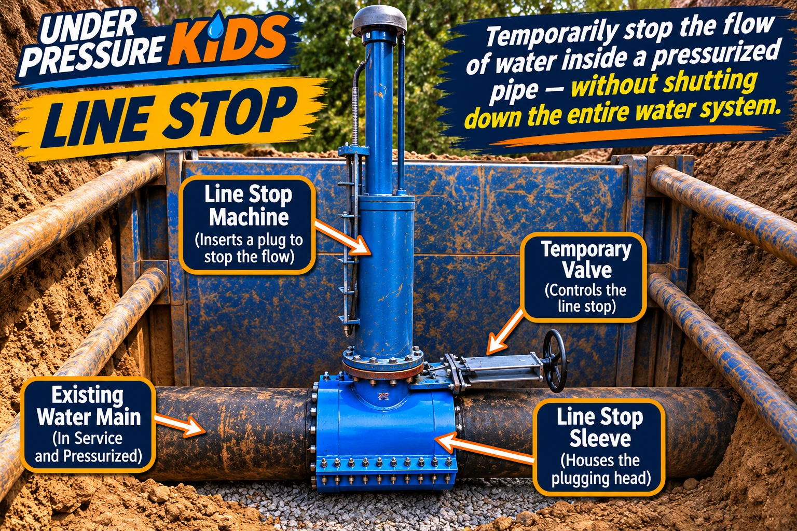

How Line Stops Work

Select the illustration to view it at full size.
Drip explains how crews can temporarily stop water inside a main so a section can be repaired.
A Temporary Roadblock
Imagine putting a temporary roadblock on a street. A line stop is a temporary barrier inside a pipe. It helps crews control water flow at a chosen location.
Working on a Section
Special equipment is attached to the main so trained workers can place a stopping head inside the pipe. Other valves or line stops may be needed to isolate the section from every direction. Crews verify that pressure is relieved before opening the isolated pipe.
Keeping Riverton Supplied
Sometimes a temporary bypass pipe carries water around the work area. When the repair is finished, crews can remove the stopping equipment and return the main to service. The fitting can remain on the pipe.
Did You Know?
A line stop is temporary. A valve insert provides a permanent valve for future use.
Your Next Discovery
Think about a road detour. How is a temporary water bypass similar?
Keep exploring! There’s an amazing world beneath your feet.